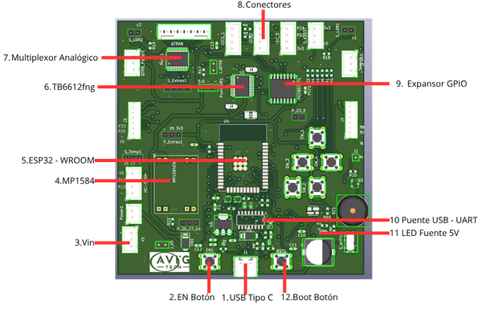

ESP32 - STEM v1
Esta guía muestra como utilizar la placa de desarrollo ESP32 STEM de AVIG TECH
Qué necesitas
USB 2.0 Tipo C
Computador con sistema operativo Windows, Linux o MacOS
Placa de desarrollo ESP32 - STEM V1
Descripción General
La placa de desarrollo basada en ESP32 WROOM ha sido diseñada como una solución integral para proyectos de educación STEM, robótica e IoT. Este dispositivo combina conectividad inalámbrica (WiFi y Bluetooth), capacidad de procesamiento en tiempo real y una arquitectura flexible que permite interactuar con sensores, actuadores y sistemas externos.
Su diseño está orientado a facilitar el aprendizaje progresivo, desde conceptos básicos de electrónica y programación hasta la implementación de sistemas avanzados como comunicación MQTT, integración con ROS 2 y desarrollo de interfaces HMI. Gracias a su compatibilidad con entornos como Arduino, MicroPython y frameworks IoT, la placa se convierte en una herramienta versátil tanto para estudiantes como para desarrolladores.
Componentes principales
{kind=link}

ESP32 STEM V1
Entre los principales elementos que incorpora se encuentran:
N |
Elemento |
Descripción |
|---|---|---|
1 |
Puerto USB Tipo C |
La comunicación serial se puede realizar en base a tipo C |
2 |
Botón EN |
Botón de reinicio del sistema. Al presionarlo, reinicia el ESP32 y reinicia la ejecución del programa cargado. |
3 |
Entrada VIN |
Terminal de alimentación externa. Permite alimentar la placa con una fuente de voltaje externa, que posteriormente es regulada para el correcto funcionamiento del sistema. |
4 |
Regulador MP1584 |
Convertidor DC-DC step-down encargado de regular el voltaje de entrada a niveles adecuados para el sistema (5V / 3.3V). |
5 |
Módulo ESP32-WROOM |
Microcontrolador principal del sistema. Integra WiFi, Bluetooth, CPU de doble núcleo y periféricos necesarios para aplicaciones IoT y robótica. |
6 |
Driver TB6612FNG |
Controlador de motores DC de doble canal. Permite controlar dirección y velocidad mediante señales PWM desde el ESP32. Voltaje de operacion de 2.5 a 13 [v] y 1.2 [A] nominal por canal. |
7 |
Multiplexor Analógico |
Multiplexor analógico de 16 canales que permite expandir las entradas analógicas del ESP32. |
8 |
Conectores de E/S |
Interfaces físicas para conexión de sensores y actuadores. Distribuyen señales de alimentación, tierra y pines GPIO del ESP32. |
9 |
Expansor GPIO |
Expansor de pines digitales (PCF8574T) mediante comunicación I2C, utilizado para aumentar la cantidad de entradas/salidas disponibles. |
10 |
Puente USB a UART |
Chip encargado de la conversión USB a comunicación serial UART, utilizado para la programación y depuración del ESP32. |
11 |
LED de alimentación 5V |
Indicador visual que se enciende cuando la placa está correctamente alimentada. |
12 |
Botón Boot |
Botón utilizado para entrar en modo de programación. Se emplea junto con el botón EN para cargar firmware en el ESP32. |
A continuación, se presentan las hojas de datos oficiales de los principales componentes utilizados en la placa:
TB6612FNG (Driver de motores)
CD74HC4067SM (Multiplexor analógico)
PCF8574T (Expansor GPIO I2C)
MP1584 (Regulador DC-DC Step-Down)